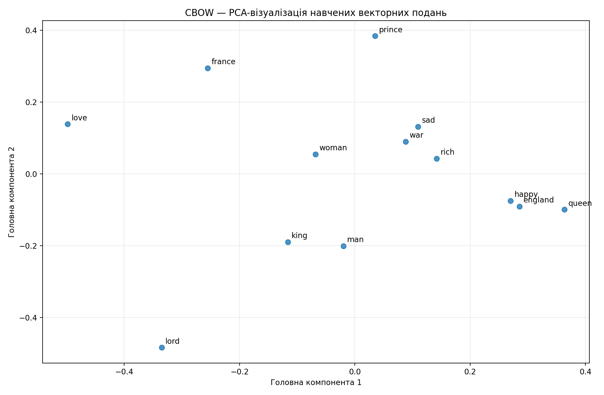
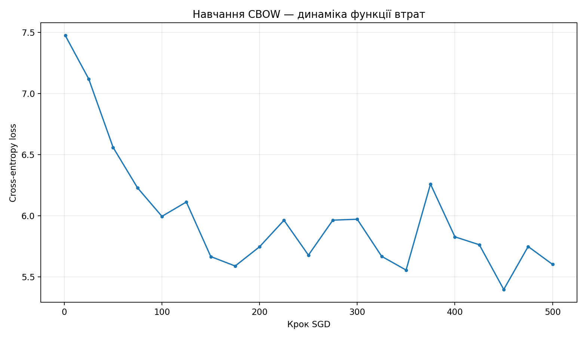

Лабораторна робота № 8 · NLP
Векторні подання слів · CBOW
Власна реалізація Continuous Bag of Words з NumPy: навчання нейромережі, косинусна подібність, арифметика векторів і візуалізація PCA.
Інтерактивна перевірка векторів
Введіть слово з корпусу, щоб знайти найближчі слова. Розрахунок здійснюється у вашому браузері з опублікованими навченими векторами.
Завантаження векторів…
Векторна арифметика
PCA-візуалізація

Навчання нейромережі

Методика і висновки
Використано слова з корпусу Shakespeare (англійська мова); CBOW передбачає центральне слово за сусідніми. Вектори мають 50 вимірів. Модель навчена з ReLU, softmax і крос-ентропією; оптимізація — мінібатчний SGD.
Результати на маленькому літературному корпусі не дорівнюють якості великих готових моделей: складні семантичні аналогії можуть бути неточними. Файли з кодом, CSV, вагами та повними результатами доступні в GitHub-репозиторії.